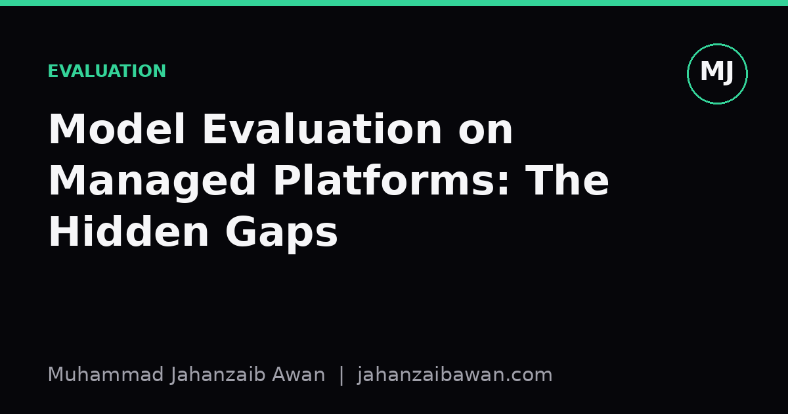

Model Evaluation on Managed Platforms: The Hidden Gaps
Cloud AutoML dashboards make evaluation look solved. They are not lying to you, but they are not telling you everything either.

The dashboard tells a clean story
Open a managed machine learning platform after training a classifier and you get a tidy summary: accuracy, precision, recall, an AUC curve, maybe a confusion matrix rendered in soft colours. It looks authoritative. Someone spent real effort making it legible. The trouble is that legibility and correctness are different things, and a dashboard can be perfectly legible while quietly answering a question you never asked.
The core issue is that the metric on screen is only meaningful in the context of how the data was split, how the labels were defined, and what population the model will actually see in production. Managed platforms handle the split for you, often with a single dropdown offering something like an eighty-twenty random split. That convenience is precisely where the risk lives, because a random split is only appropriate when your data points are genuinely independent and identically distributed over time and over groups. Much real world data is neither.
Consider a fraud detection dataset where transactions from the same customer appear repeatedly across months. A random split will happily scatter that customer's transactions across both training and test sets. The model then partly memorises customer-specific quirks rather than learning general fraud patterns, and the test accuracy on the dashboard, say ninety-four percent, looks excellent. Deploy it on next month's genuinely unseen customers and performance can drop by ten or fifteen points, sometimes more, because the evaluation never tested generalisation to new entities in the first place.
Leakage rarely announces itself
Leakage is the term for information from outside the legitimate training window sneaking into the features or the split, and it is the single most common reason a model looks brilliant in a dashboard and mediocre in production. Managed platforms are particularly prone to hiding it because feature engineering, splitting, and evaluation often happen inside the same opaque pipeline, with no easy way to inspect what fed into what.
A concrete example: predicting whether a customer will churn within thirty days, using a feature called days_since_last_support_ticket. If that feature is computed using the entire historical record rather than only information available at the prediction date, a customer who churned and then, naturally, stopped generating support tickets will show a suspiciously large gap just before the label was set. The model latches onto that pattern. Reported AUC might sit at 0.91, which sounds like a strong result worth shipping. In reality the feature encodes the outcome, and once you correct the timestamp logic so features only use information available before the prediction point, the honest AUC can fall to something like 0.68, a far more sober number that better reflects what the model can actually do at inference time.
The dashboard cannot warn you about this because it has no concept of your business logic or your feature provenance; it only sees numeric columns and a label. Managed platforms that offer automatic feature generation from joined tables make this worse, since convenience features are often built without regard to temporal ordering. The fix is not to distrust the platform wholesale, but to insist on reconstructing, by hand if necessary, exactly which rows and which timestamps contributed to each feature before you trust any reported metric.
Aggregate metrics smooth over the failures that matter
Even when the split is sound and leakage is controlled, a single headline number such as overall accuracy or macro F1 tends to flatten exactly the detail a practitioner needs. Suppose a model for medical triage reports ninety-two percent accuracy on a held-out set. That number could be entirely driven by the majority class if, say, ninety percent of cases are low-risk. A trivial baseline that always predicts low-risk would score ninety percent, meaning the sophisticated model has bought you only two points of genuine lift, and quite possibly at the cost of missing the minority of urgent cases that actually matter clinically.
Dashboards increasingly offer per-class breakdowns and confusion matrices, which is progress, but they rarely surface performance across subgroups that were not defined as explicit labels during training: different age bands, different device types submitting the data, different time periods with seasonal drift. A model can hit eighty-eight percent recall overall while sitting at sixty percent recall for one demographic slice that was underrepresented in training. Unless someone deliberately slices the evaluation set and checks, that gap stays invisible, sitting quietly behind a respectable-looking headline figure.
Threshold choice is another quiet omission. Precision and recall curves are informative, but the platform typically picks a default threshold of 0.5 to compute the summary statistics you see first. That threshold is arbitrary with respect to your actual costs. If a false negative in a churn model costs far more than a false positive, because losing a customer is expensive while a discount offer to a loyal customer is cheap, the operating point should be chosen deliberately based on that cost ratio, not inherited silently from a default setting embedded in the reporting layer.
What to actually do about it
None of this means managed platforms are untrustworthy, only that their dashboards summarise rather than audit. The practical response is a short discipline you apply every time, regardless of which platform you use. First, define your split manually around real world entities and time, grouping by customer or account and holding out a genuinely future time window rather than accepting a random shuffle by default. Second, trace every feature back to its timestamp logic and ask, honestly, whether that value would have existed at prediction time in production.
Third, always compute a naive baseline, majority class or simple rule of thumb, alongside the model's headline metric, so that a ninety-two percent accuracy is immediately contextualised against the ninety percent you would get for free. Fourth, slice the evaluation by any subgroup you consider operationally relevant, even if the platform's default report does not offer that slice automatically; most platforms let you export predictions and do this analysis yourself in a few lines of code. Finally, choose your decision threshold deliberately based on the relative cost of false positives and false negatives, rather than accepting whatever the dashboard highlights by default.
The dashboard is a starting point for a conversation with your data, not the end of one. Treat the numbers it shows as hypotheses to interrogate rather than conclusions to report upward, and the gap between what looks good in the tool and what actually works in production will shrink considerably.